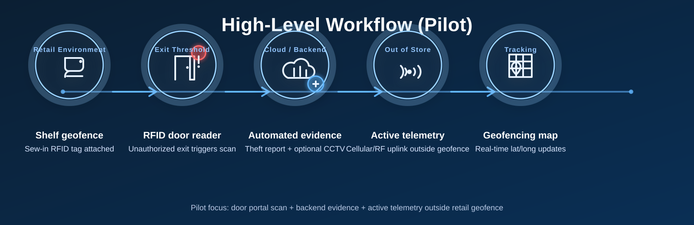

SYSTEM REQUIREMENTS & PRODUCT DESIGN SPECIFICATION (PDS)¶
Document Ref: Safeon-Oxman-SFT-001
Project: Hybrid RFID Reader‑Tag & Telemetry Platform (Pilot Deployment Phase)
Author: Pharrell Mwewa Chatupa, CTO, Shenzhen Safeon Technology Co., Ltd.
Client: Des Fynn, Director, Oxman Group Pty Ltd (DES TRACK)
Date: June 2, 2026
Status: Engineering Review / Working Draft
1. Executive Summary & Purpose¶
This document establishes the technical specifications, hardware architecture, and firmware state requirements for the pilot deployment of the hybrid RFID Reader‑Tag ecosystem.
The immediate engineering sprint focuses on developing a 20‑unit prototype run to validate real‑world cellular/RF telemetry, anti‑theft workflows, and long‑range asset tracking outside a laboratory environment.
2. System Architecture & High‑Level Workflow¶
The platform bridges short‑range retail asset tagging with long‑range tracking, behaving simultaneously as an asset tag and an infrastructure reader.
2.1 High‑Level Flow¶

Note: The pilot diagrams for “theft event visualization” and the “power state machine” will be added once the final images are exported to
docs_src/assets/.
2.2 Functional Narrative¶
- In‑store theft detection: High‑value assets are fitted with Des’s designated sew‑in RFID tags. If an asset passes the exit threshold without point‑of‑sale clearance, a localized RFID portal scans the asset tag and updates the backend system to Stolen status.
- Automated evidence generation: The cloud platform compiles a digital incident report. If integrated with store camera layouts, it attaches a video/still snapshot tracing the object from shelf to door.
- External telemetry: Once the asset exits the retail geofence, the onboard tracking architecture provides remote location updates outside store premises.
3. Hardware Engineering Specifications¶
3.1 Mechanical Enclosure & Form Factor (Pilot Adjustments)¶
Production target (long‑term): - Pocket‑sized compact profile: 40 × 25 × 10 mm (target envelope)
Pilot trial adjustment (20‑unit run): - Modified slightly thicker enclosure to increase mechanical tolerance for: - physical debugging - manual assembly testing - optimal antenna placement during field testing
Tag attachment mechanism (pilot): - Temporary structural eyelet/loop to support a secure loop strap/cord for quick attach/remove during testing. - This runs in parallel with future development of a proprietary mechanical/magnetic POS release base.
3.3 Hardware Extensibility & Sensor Payload¶
The core PCB layout must include: - Unpopulated pads and modular expansion rails (I2C/SPI) to allow fast integration of secondary telemetry peripherals.
Primary phase (pilot): - Base tracking and RF telemetry.
Secondary expansion phase (future): - Direct integration of onboard accelerometers/motion detectors and temperature sensors without requiring a fundamental PCB re‑spin.
4. Firmware & Power Management Architecture¶
To transition successfully to extended commercial lifespan requirements, the firmware must implement a strictly managed state machine.
4.1 Power State Machine¶
(Diagram pending – export to docs_src/assets/state-machine.(png|svg) and link here.)
4.2 State Definitions¶
State 0 — Deep Sleep / Dormant (Shelf Life) - Objective: Achieve up to a 2‑year dormant shelf life prior to deployment. - Logic: All non‑essential peripherals and RF engines are placed into hard sleep. The MCU wakes on an internal timer to broadcast a minimal “turn‑on beacon” at a wide interval, then returns to sleep.
State 1 — Active Telemetry Mode - Objective: Minimum 6 months operational life in the field. - Logic: Triggered by threshold breach or remote activation. Power cycling across modems + motion wake used to reduce current draw.
State 2 — Standby / Reset - Baseline monitoring + accelerometer wake‑on‑motion armed.
5. Software & Backend Integration Requirements¶
5.1 API Run‑Sheets & Documentation Format¶
- All system documentation, endpoint definitions, and payload structures must be formatted in clean, descriptive Markdown for running‑sheet workflows and AI review/iteration.
5.2 Platform Scalability¶
- Decouple telemetry processing from business logic to support Asset Management + Event Management dashboards over time.
6. Pilot Timeline & Deliverables¶
6.1 Immediate Milestone Deliverables¶
Target delivery: 20 fully functional prototype tracking units.
In‑person alignment milestone: June 20, 2026 - Physical hardware review - Firmware state verification - Mechanical assembly optimization at Oxman facility
Pilot objective: Enable stakeholders to validate cellular handoffs and out‑of‑store localization in real environments.
7. Open Items / TBDs (Engineering Review)¶
7.1 Hardware¶
- RFID reader module: exact model / supplier / interface (SPI/UART) for pilot
- Cellular module: exact model / bands / power profile
- Antenna strategy: internal vs external, tuning plan, test fixtures
- Target enclosure thickness for pilot and max allowed PCB area
- Environmental rating target (IP rating) for pilot (if any)
7.2 Firmware¶
- Turn‑on beacon interval in State 0 (and battery impact model)
- Motion thresholds / sampling strategy in State 1 and State 2
- Remote command security (auth, replay protection, key management)
- Remote kill command / POS disarm exact UX + permission model
7.3 Backend¶
- CCTV integration scope: inputs required (camera map, timestamps), supported systems
- Theft report format and jurisdiction customization requirements
- API payload schemas and versioning strategy (v1/v2), telemetry ingestion contracts